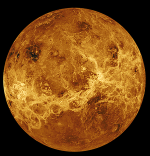

Die Venus
| Perihel(in AE) |
|0,718 |
| Aphel(in AE) |
|0,728 |
| Durchmesser(Äquator) |
|12103,6 km |
| Umlaufzeit |
|224,701 Tage |
| Masse |
|4,869*1024 kg
|
| Dichte |
|5,243 g/cm3 |
| Hauptbestandteile |
|Kohlenstoffdioxid (96,5%)
|Stickstoff (3,5%)
|Schwefeldioxid (0,015%)
|
Dauer eines Tages
(Rotationsperiode)
|
|243 Tage 27 min (Erdenzeit)
| |
| Oberflächentemperatur |
|437°C (Minimum)
|497°C (Maximum)
|
| Anzahl der Monde |
|0 |
Die Venus ist nach dem Merkur der Sonne am nächsten. Ungefähr 108 Millionen Kilometer ist die Venus im Mittel von der Sonne entfernt. Im Perihel, also im sonnennächsten Punkt, ist die Venus 0,718 AE von der Sonne entfernt.
(AE bedeutet „Astronomische Einheit“; 1 AE entspricht dem mittleren Abstand zwischen Erde und Sonne). Im Aphel, also im sonnenfernsten Punkt, ist die Venus 0,728 AE von der Sonne entfernt.
Durch die Nähe zur Sonne herrschen auf ihrer Oberfläche sehr hohe Temperaturen. Im Mittel beträgt die Oberflächentemperatur 464°C. 437°C beträgt die niedrigste Temperatur. Die Höchsttemperatur beträgt 497°C. Damit ist die Venus der heißeste Planet in unserem Sonnensystem.
Die Venus ist ein erdähnlicher Planet, das heißt, dass sie eine feste Oberfläche besitzt und durch ihre eigene Schwerkraft zu einer Kugel geformt wurde. Die Größe und das Gewicht unterscheiden sich kaum von dem der Erde. Auch der Aufbau ist ziemlich ähnlich. Der Kern besteht aus Metall und der Mantel und die Kruste aus Gestein.
Trotzdem unterscheidet sich die Venus von der Erde in vielerlei Hinsicht. Ihre Atmosphäre besteht aus 96,5% CO2 und der Druck ist 90 mal höher als auf der Erde. Durch die vierzigfach höhere Dichte erinnert die Luft eher an Wasser und die Atmosphäre lässt Sonnenlicht nur gedämpft durchscheinen.
Die anderen Bestandteile der Venusatmosphäre sind 3,5% Stickstoff und 0,015% Schwefeldioxid. Es findet sich darin aber auch etwas Argon (0,007%), Neon (0,0007%), Helium (0,0012%), Kohlenmonoxid (0,0017%) und Wasserdampf (0,002%).
Die Venus braucht 224,701 Tage um die Sonne zu umkreisen, jedoch braucht sie 243 Tage und 27 Minuten um sich nur um die eigene Achse zu drehen. Dementsprechend dauert eine Venustag ca. 243 Tage und ein Venusjahr nur ca. 225 Tage. Somit ist ein Jahr auf der Venus kürzer als ein Tag auf ihr.
Man nimmt an, dass vor vier Milliarden Jahren die Temperaturen der Venus sehr ähnlich zu den heutigen Temperaturen der Erde waren. Es soll Ozeane, Wolken und Regen gegeben haben. Die kleine Distanz zur Sonne wurde durch eine geringere Strahlkraft der Sonne zu der Zeit ausgeglichen. Unter diesen Umständen hätte sich durchaus Leben entwickeln können, doch die immer stärker werdende Sonneneinstrahlung und ein Treibhauseffekt sorgten für immer heißere Temperaturen. Das Wasser entwich in den Weltraum und Kohlenstoffdioxid sammelte sich in der Atmosphäre.
Doch selbst bei diesen Umständen spekuliert man über Leben in der Atmosphäre. In den Wolken der Venus könnten sehr widerstandsfähige Bakterien leben, die für das Fehlen und das Vorhandensein bestimmter Gase verantwortlich sein könnten. Zudem fand 1987 eine Eintauchsonde von Pioneer Venus 2, ein Weltraumforschungsprojekt der USA, in den Wolken Partikel in Bakteriengröße.
Nach dem Mond ist die Venus das hellste Objekt am Nachthimmel. Die Venus selbst besitzt keine Monde. Da sie nur morgens und abends sichtbar ist wird sie auch häufig Morgen- oder Abendstern genannt. Meist kann man die Venus schon mit dem bloßen Auge beobachten.
Quy Yau

Die Venus.
(als CC0 freigestelltes Bild von Pixabay.com)